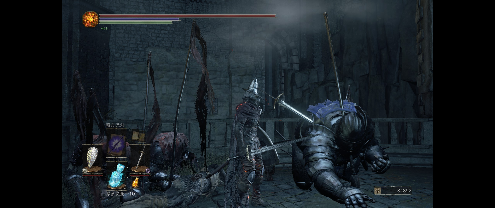
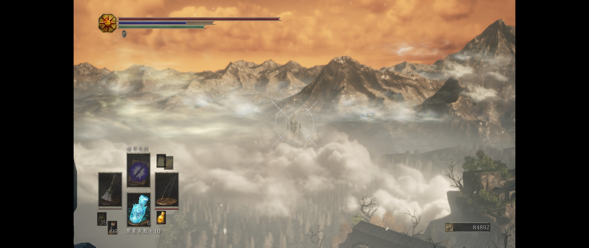
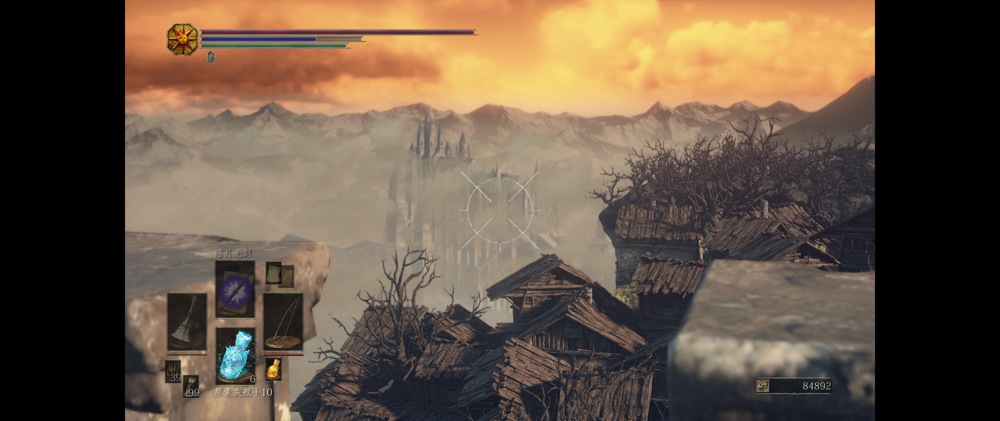
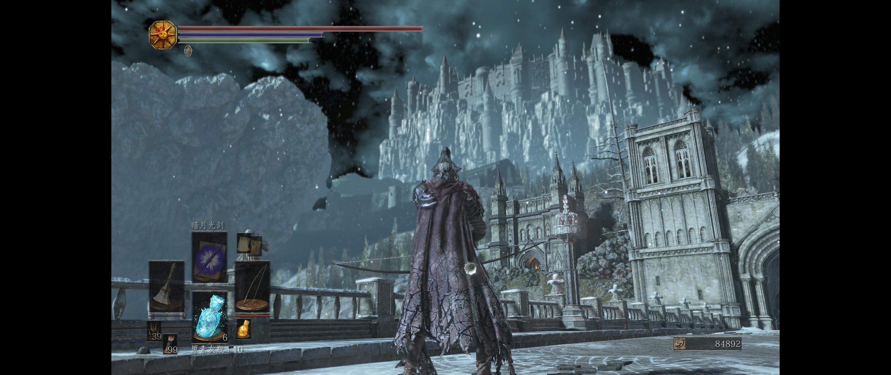

在我正式游玩黑暗之魂前，我以为“魂学家”会像是上古卷轴的“Lore 党”一样的珍稀存在，但我发现并不是。
剧透注意。
引发好奇
我是一个很看重故事和玩法的人，没有一个好的故事或者优秀的玩法，一款游戏很难吸引我的目光。
在洛斯里克高墙时，吸引我的部分很难说有故事的存在。没有故事的支撑，我原以为这个游戏也会像其他游戏一样，当我对他的“玩法”感到腻烦时便不再打开，但事实证明我错了，黑暗之魂的故事，或者说叙事，非常有趣。当然，玩法上黑暗之魂也是十分优秀的，或许也值得我单凭这一点就体验完全部内容。不过，玩法部分并不是本文的重点。
黑暗之魂3是我玩过的第一部魂系列游戏，它的故事也吸引着我。让我惊叹的叙事部分在于洛斯里克的高墙的关底那一段。
洛斯里克高墙的关底部分有着什么？有玩家遇到的第一个羽翼骑士，有第二个 Boss 波尔多，有第一个看起来很像 Boss 战场景但并没有敌人的主祭所在的教堂。
羽翼骑士，我第一次遇到他时并不知道天使信仰，更别说洛斯里克内部的斗争了——但这并不妨碍我感受到这一点。想要遇到羽翼骑士，那么首先玩家会从梯子下面看到许多洛骑的尸体（或者说空壳？）。初见这个场景的时候便勾起了我足够的好奇。为什么他们在“自相残杀”？是因为活尸化吗？ 在此之前，玩家应该还没有见过任何的怪物间的自相残杀（第一次遇见，应当是在法兰不死队门口的吸魂鬼和法兰不死队）。因此，我玩到这里时，感到的是深深的疑惑。

在这里可以很明显的看到，羽翼骑士身上插着的就是洛斯里克骑士剑。
第二个使我疑惑的地方在于高墙的 Boss，“冷冽谷的波尔多”。一个初见的玩家在这里，几乎不可能听说过冷冽谷这个地方（除非在载入时看到了物品的说明）。那么，为什么冷冽谷的人会出现在洛斯里克城？又为什么是从一坨“旋涡”中出现？
随着游戏的进行，类似的奇怪之处会一个个地出现。有的会在后面得到解释，有的需要玩家用心发掘，有的则需要一点脑补能力。
并不随意的设定
物品说明，这一并不特殊的设定，在黑暗之魂里却变成了几乎唯一的信息来源。官方也毫不避讳这一点，在载入界面便是随机出现的物品说明，而在游戏进程里，却没有多少文字。有的观点认为这种叙事方式是投机取巧，但我认为制作组在叙事上下了非常大的功夫，并不比平铺直叙的方式简单到哪里。
例如，由幽邃主教群掉落的骑士人偶提到冷冽谷被结界笼罩，需要持有这个人偶才能进入冷冽谷。乍一看，似乎这只是一个限制流程的道具，但是制作组确实在别的地方体现了结界这一特点。在冷冽谷，可以清晰地看到洛斯里克城，但在洛斯里克城却完全看不清冷冽谷。

在高举小环旗的地方，只能看到建筑的一点点尖。

在搬运工带玩家抵达的地方，也只能隔着云雾看到一点王城的顶部。

而在穿过了冷冽谷结界之后的桥上，整个洛斯里克城清晰可见，连渲染方式都变了。
玩过一代的玩家可能会发现两点异常之处：一代的王城在高山之上，而三代里所在的位置却比不死聚落还矮；三代的王城似乎比一代的王城小了很多。不过随后我们就会知道，三代的场景是空间错乱的，许多无关的地区被“糅合”到了一起，而且洛斯里克城为了抵抗“人之脓”，也将城池给“升了起来”。这么一来，也是合理的。
在烟熏湖中，我们会遇到一只非常巨大的沙虫，而且，我们可以从黄虫药丸的道具说明中看到它的来历：
卡萨斯的守墓人们使用这个药丸猎杀一只砂蠕虫，据说那只砂蠕虫最后落入深层地底，变成熏烟湖的巨大主宰。
黄虫药丸可以提高雷的抗性，而烟熏湖的沙虫也会使用雷系的法术。
诸如此类的许多细节，我们有理由认为 From Software 不会做出自相矛盾的设定来，许多看似奇怪的环境和怪物，必然有其对应要讲述的“故事”隐藏在其中。
矛盾与疑问
黑暗之魂的怪物种类都是有各个区域的特色的，不同区域间的怪物设计和种类都差异明显。那么，玩家在游玩过程中，显然会对这种显然的矛盾之处感到疑惑。
例如无主墓地前的蛇人守卫。玩家常常遇见蛇人守卫的地方，一代中有塞恩古城，三代中有古龙顶。而我们知道塞恩古城是王城的要塞，那么我们可以推测蛇人是神族的守卫。既然蛇人守卫和神族有了关系，那么太阳长子前往的地方——古龙顶，也出现蛇人就不奇怪了。这样一来，蛇人出现的地方势必与神族有关，那么无主墓地出现的一个蛇人守卫就显得十分耐人寻味了。基于此，有“魂学家”提出无主墓地是神族的墓地（例如古达是神族）的说法，这个说法同时也解释了为什么无主墓地会存在黑骑士。
又如石像鬼。一代中出现的石像鬼有两处，一个是守钟的石像鬼，一个是王城的石像鬼。鉴于钟的作用是打开塞恩古城的大门，我们不难理解两处的石像鬼确实（都和神族）有所联系。三代的石像鬼则出现在洛城顶和罪业之都。先不说两作之间的石像鬼是否有联系，石像鬼作为一个只出现过少数几次的特殊怪物，玩家们在洛城顶遇到石像鬼时，产生疑惑也是自然而然的了。基于此，玩家们会发现洛城内竟然有一个雕像持有教宗沙力万的罪业大剑，而沙力万则到达过罪业之都。
黑暗之魂的怪物设计非常优秀，而游戏体验也会使得玩家对怪物的印象颇深。那么，由此而延伸来的，利用怪物引发矛盾，进而使玩家不自觉的感到疑问，那么玩家会主动去探索剧情也不奇怪了。
除了怪物之外，特殊道具的入手也可以达到这一效果。例如罗莎莉亚的灵魂可以换来奇迹阳光滋润，斯摩的巨锤依旧在冷冽谷，猎龙者套装却在古龙顶（而且没有尸体），哈维尔的一套在法兰要塞旁边的高墙上的离群恶魔边上（而且有尸体），这一切都令人浮想联翩。
场景也是故事的一环
黑暗之魂不是第一个用场景来叙事的，但或许是少数几个把场景作为故事的重要组成部分的。在此之前，大多数游戏对游戏场景的利用，多集中在烘托氛围，或者写实的画面上。但黑暗之魂更进一步，它把场景作为故事的重要补充，并且填充了大量的剧情暗示。黑魂的场景，潜藏着大量的暗示要素。灰烬审判者旁边的巨大棺材，打刀看守的存有防火女眼眸的塔内大量的尸体，洛斯里克高墙一开始就出现的树状人形，羽翼骑士和洛骑的尸体，再到往后的不死队尸体堆，与神族有关的建筑高大的门，人类居住的罪业之都矮小的门，尤姆王座旁边的大量尸体，无一不在展示着这个世界的历史。
黑暗之魂的画面并不算好，甚至可能赶不上古墓丽影。但是，在古墓丽影中，我面对开阔而精美的场景，能感受到的只有精美，但它们却不值得我一点一点细细观察。而在黑暗之魂里，无数细节都暗藏在场景之中，好比我前文提到的冷冽谷和洛城互相远望的区别，能自然地引发玩家的探索欲望。
我相信大量利用场景来讲述故事并不比平铺直叙的大量文本来得简单，这一切都倾注了制作组的心血，实在很难说是制作组寻找的一个偷懒方法。
进程外的乐趣与感染力
4X 类游戏有一个要素叫探索（explore），尽管我认为在这类游戏里这个要素应该叫侦查。在黑暗之魂里，除去进程的推进，也有探索的乐趣在，虽然似乎这个乐趣的门槛稍微高了一点。
随着游戏的进展，积累的“魂学”知识也越来越多，我也会尝试解读一些游戏中的暗示和剧情。当我意识到我正在做的事情其实是在创造“我自己的黑暗之魂故事”时，我想到的是那句几乎都要被用烂了的句子：
一千个人眼里有一千个哈姆雷特
脑补故事的乐趣是游离于游戏本身进程之外的，但这也使得这个乐趣不因为游戏的结束而结束。黑魂的游戏进程本身并没有透露出特别多的故事，对“魂学”一无所知的玩家只会知道游戏的内容是斩杀薪王，取得柴薪，然后传火，延续世界——似乎是一个很王道的故事。但参与到“魂学”中之后，玩家会逐渐了解更多关于火、不死人诅咒的事情，进而感受到整个黑魂世界绝望而悲伤的氛围，也会衍生出自己的对传火一事的态度，也能了解葛温及神族的各种事迹。仿佛玩家不是一个传火的英雄，而是一个在考古的历史学家，一点点地揭开历史的真相，传火的真相。
通过亲身参与而传达出来的剧情，会更加有感染力。
参与感
一个有角色扮演要素的游戏，参与感，或者说代入感，是很重要的。回想一些传奇般的RPG游戏，故事的进程是与玩家息息相关的。
近一些的，有知名的“囚犯卷轴”。上古卷轴从第一代竞技场开始，就有了主角是囚犯的先例。在3代之后，更进一步，主角在游戏开始前仿佛就没有一个合法的身份——尽管主角们一个是英雄转世，一个成了疯神，一个是龙裔，但游戏完全没有对其之前的身份做任何设定。与上古卷轴相近的，辐射系列虽然并不是凭空“造”出了一个主角，但是主角的大部分经历都是在玩家参与后才发生的，与主角自身有关的内容相比其他并不算很多。RPG 界的传奇异域镇魂曲则干脆将主角设定成了一个“诈尸”的无名氏，在轮回中忘记了自己的一切，游戏的进程便是寻回主角的记忆。
这些游戏的特点之一，就是主角大部分的知识和玩家的知识是共通的。这可以更容易地使玩家产生代入感（而不像 DND 那样，扮演也是有门槛的），让玩家感受到自己的行为确实是在影响游戏世界，确实是参与到了故事之中。
而与之相对的，则是弱化了参与感的游戏。广义上看，我把古墓丽影、刺客信条和巫师都纳入这一类里。大部分时候，这些游戏的主角会有自己独特的知识和见解，这种与玩家的知识割裂会破坏代入感，让人感觉像是在看一部电影，而弱化了角色扮演的感觉。
回到黑魂中来，在其中“考古”和角色扮演有什么关系？仔细想想，黑魂的主角一言不发，似乎考古与角色没有什么关系，纯粹是玩家自己的行为。但是，换一种角度，主角没有态度，其实等于玩家的态度就是主角的态度。玩家对世界的理解决定了主角对世界的理解，玩家对传火的态度决定了主角对传火的态度。因此，尽管黑魂系列的流程都是线性的（我认为一代也是线性的，这涉及到我对线性的理解，在此不做展开），但却能产生许多开放世界游戏都不及的参与感和代入感。
结语
黑暗之魂的叙事手法确实非常吸引人而具有创造力。过往的绝大部分游戏，即使是 CRPG 一类的注重剧情的游戏，大多数都致力于如何讲一个好故事，由此衍生出了许多种手法。黑暗之魂则展示了一种完全不同的可能性，它致力于让玩家主动探索故事。
我回忆起四五年前，上古卷轴贴吧还繁荣的时候，有关奈恩的 Lore 讨论往往关注寥寥，以至于 Lore 党们要专门去一些小众的地方专门讨论（也就是 Vivec 吧之类的）。固然上古卷轴本身对 Lore 的介绍就含混不清，而且新作似乎更偏向于写实，更重要的一个原因也许是游戏本身没有特别的引导。而反观黑魂，往往关于剧情的讨论都十分热烈，基本上随便拉一个玩家出来都会有自己的理解——无疑，这种手法是成功的。
让玩家主动探索故事是一个方向，但如何平衡海面上和海面下的故事内容或许是个问题。
若照搬黑魂，利用掩盖的手法，先不提这个手法是否足够优秀，这个手法本身便存在着一些问题：掩藏的东西太少，则没有探索的乐趣；掩藏的东西太多，又不可避免地会让剧情陷入黑魂饱受诟病的模棱两可上。或许恐怖游戏或者宗教哲学类的游戏会喜欢这个手法，但我认为这并不是最佳的方案，也不具备普适性。
一个更加可能的手段是，将探索的部分作为游离于透明的故事之外的“额外内容”，从场景和怪物中下手，设计更多的细节、矛盾和伏笔，逐渐地构筑起一道道谜题，随着剧情的推进而逐步解开。既可以避免将谜题与矛盾写入文本中，一通灌给玩家，又可以让玩家更乐于观察、体验游戏世界。这里又不得不提到上古卷轴。天际省里面确实存在着大量隐藏的内容，但是一个显而易见的问题是，这些隐藏的内容过于隐藏了，有的甚至没有一点提示，只是一封信散落在路边——这撞大运般的细节如何能让玩家主动去探索？当然这么评论对上古卷轴是不公平的，因为从现实的角度上讲，确实这封信只能普通地散落在路边，不可能会有更多的提示了。但也许，我们可以把这种彩蛋式的细节放大一些，放到更为重要、更为宏大的剧情线中去。